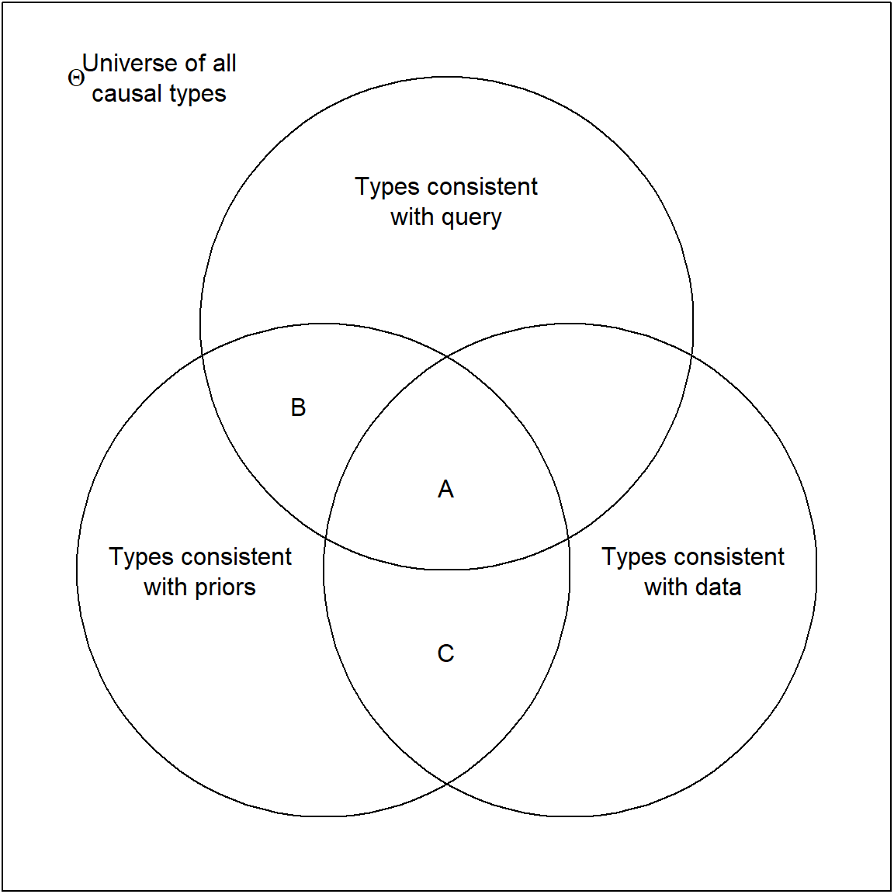
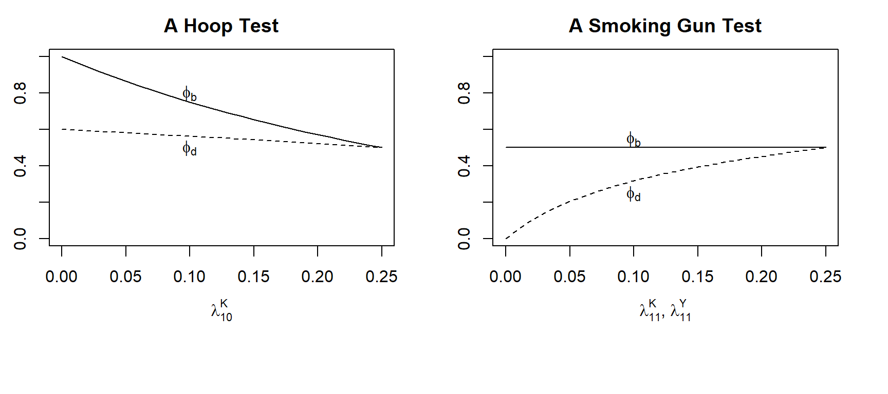
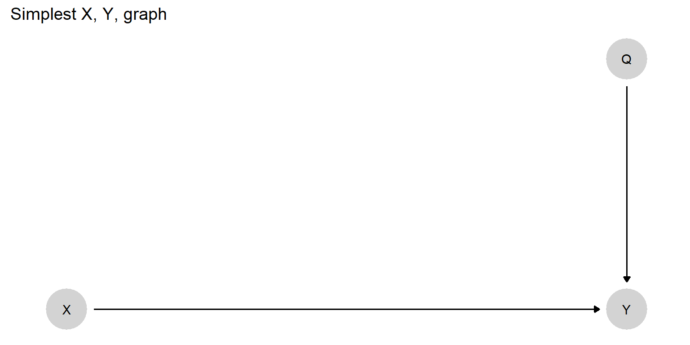
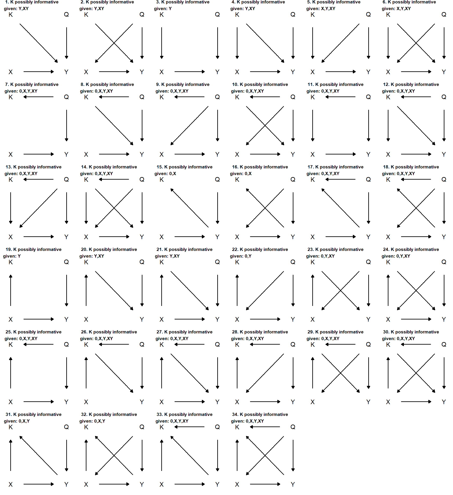
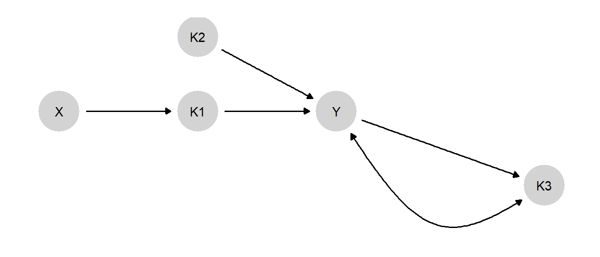

7 Process Tracing with Causal Models
Chapter summary
We show how process tracing can be implemented within a causal-model framework. The chapter outlines a model-based procedure for drawing case-level inferences from within-case evidence. We also show how a key result from the causal-models literature provides a condition for when the observation of a node in a causal model (a “clue”) may be (or certainly will not be) informative and we extract a set of implications for process-tracing strategies.
We now show how we can use causal models to address the kinds of problems of causal inference that social scientists frequently grapple with. We begin by demonstrating how we can use causal models to conduct confirmatory process tracing.
Going forward, we conceptualize process tracing somewhat more broadly than some previous treatments. Scholars have sometimes defined the method in terms of the parts of a causal system from which evidence is drawn or in terms of the kinds of questions being asked. For instance, George and Bennett (2005) (p. 6) define process tracing, in part, as involving the use of evidence on “the sequence and values of the intervening variables” in a causal chain, while Bennett and Checkel (2015) (p. 7) specify the method as one undertaken “for the purposes of either developing or testing hypotheses about causal mechanisms that might causally explain” a case.
We take a slightly more ecumenical approach to thinking about the nature of the evidence that may be deployed or the inferential purposes being pursued in process tracing. We consider process tracing to be an approach that seeks to draw causal inferences about a single case using data from that case. The data used may be evidence on intervening steps, on features of context, or on any other potentially informative part of a causal system. Moreover, the causal question that one seeks to answer may be of any kind: whether about the cause of an outcome, the mechanism (or pathway) through which an effect unfolds, or any other query of interest to the analyst, as long as it is a question about the case at hand.
We deal in this chapter with confirmatory process tracing in the sense that our focus is on how to draw causal inferences given a set of background beliefs about how the world works, rather than how to inductively derive theoretical insights from the evidence. We note that other parts of the book — in particular, our treatments of population-level and mixed-data inference in Chapter 9, of model-justification in Chapter 15, and of model-evaluation in Chapter 16—show how we can learn about theory from the data within a causal-model framework.
Our purpose in this chapter is to show how process tracing, defined in this manner, can be grounded in a causal model and implemented within a causal-model framework. In a nutshell, the procedure we describe here involves the use of observable nodes on a causal graph to assess the value of one or more unobserved nodes on a causal graph that are informative for our causal query.
There are a number of distinctive advantages to grounding process tracing in a a causal model. First, process tracing from a model maximizes analytic transparency: It allows us to be fully explicit about the background beliefs informing our inferences, about the question we are asking, and about how precisely our answers follow from our prior beliefs and the new evidence that we are assessing. Research audiences and other scholars can then engage with and evaluate our inferences in ways uniquely enabled by formalization: They can scrutinize, call into question, and test for sensitivity to the model that we start with, the way we define our query, or the analytic steps we take upon observing the evidence. The approach also readily allows for the updating of inferences as additional case-level observations are brought to the table.
Second, grounding process tracing in a model enforces logical consistency on the set of beliefs entering into the analysis—such as between our priors on a causal question and our beliefs about the probative value of evidence—since all beliefs are derived from the same underlying model.
Third, as we show in this chapter and later in Chapter 12, embedding process tracing in a causal model offers a tool for making research design choices: It allows us to derive expectations about the kinds of new evidence that are potentially informative for our query, those that are likely to be most informative given what we have already observed, and the optimal sequence in which to search for within-case clues.
Finally, as we elaborate in Chapter 9, process tracing with a causal model opens an opportunity to integrate within-case and cross-case strategies of causal inference, allowing our inferences about individual cases to be informed by patterns observed across a larger set of cases.
7.1 The Intuition
When we undertake process tracing, we seek to answer a causal question about a given case. The key insight driving our approach is that the inference about a causal question for a case is a claim about which causal types (collections of nodal types) are both likely ex ante (given prior knowledge) and consistent with the data.1
The question of interest can be about any number of case-level causal features, including questions about a case-level causal effect, the pathway through which an effect operates, an actual cause, or causal attribution. We use observations from the case itself to address this query. We do so via a procedure in which we first encode prior knowledge in the form of a causal model, collect data on some nodes in the model from the case at hand, ask which causal possibilities (causal types) permitted by the model are consistent with the data, and then map those causal possibilities onto the specific causal query we seek to answer.
Given a causal model, we form posteriors over queries as follows:
- Specify all possible causal types for a model. A causal type, recall, is a particular combination of nodal types for all nodes in a unit. That is, a single causal type specifies both a specific set of values of all exogenous variables in a model and the values that all endogenous variables would potentially take on for all possible values of the other endogenous variables. For a simple, binary \(X \rightarrow Y\) model, the number of possible causal types will be 8; that is, 2 (the number of possible values \(X\), the root node, can take on) times 4 (the number of possible nodal types for \(Y\), the endogenous node). To illustrate, three of these causal types would be (writing them out here, rather than using our usual \(\theta\) notation):
- Type 1: (\(X=1\)) and (\(Y=1\) if \(X=1\), \(Y=0\) if \(X=0\)).
- Type 2: (\(X=0\)) and (\(Y=1\) if \(X=1\), \(Y=0\) if \(X=0\)).
- Type 3: (\(X=1\)) and (\(Y=1\) if \(X=1\), \(Y=1\) if \(X=0\)).
Whatever the model, we generate a complete set of all possible causal types.
Specify priors over causal types. We report how likely we think it is, ex ante, that a given unit is of a particular causal type. It is sometimes useful to conceive of the case at hand as having been randomly drawn from a broader population; thus, our prior beliefs about the case are equivalent to our beliefs about how common different causal types are in that population. In the simplest situation, we might place 0 weight on some causal types (those that are ruled out by background theory, for example) and equal weight on all others. More generally, we assign a lower probability to those causal types that we believe are relatively less common in the population and a higher probability to those causal types that we think are more common. Note that, in this critical step, we are mobilizing our population-level beliefs to allow us to draw case-level inferences.
Specify the query in terms of causal types. For instance, for the simple \(X \rightarrow Y\) model, the query “\(Y\) responds positively to \(X\)” can be thought of as a collection of causal types: Q={Type 1, Type 2}, above.
Once we observe the data, specify the set of causal types that are consistent with those data. For instance, if we observe \(X=1, Y=1\) we might specify the data-consistent set as {Type 1, Type 3}, excluding Type 2, with which these data are inconsistent.
Update. Updating is then done by adding up the prior probabilities on all causal types that are consistent with both the data and the query, and dividing this sum by the sum of prior probabilities on all causal types that are consistent with the data (whether or not they are consistent with the query).
This process is represented graphically in Figure 7.1, where we can think of probabilities as proportionate to areas. Our causal model defines the causal-type space. We then proceed by a process of elimination. Only some of the causal types in the model are consistent with prior knowledge. Only some are consistent with the data that we observe. Finally, any query itself maps onto a subset of the possible causal types. The causal types that remain in contention once we have observed the evidence are those at the intersection of consistency with priors and consistency with the data. \(A\) represents those types that are also consistent with a given answer to the query (say, \(X\) has a positive effect on \(Y\)).
Thus, our belief about the query before we have seen the data is the probability of all causal types consistent with our priors and with the query (\(A + B\)), as a proportion of the probability of all types consistent with our priors. Once we have seen the data, we have reduced the permissible types to \(A + C\). Our posterior belief on the query is, then, the probability of those remaining types that are also consistent with the query, as a share of the probability of all remaining types, or \(A/(A+C)\).
We now turn to a formalization of these ideas.
7.2 A Formalization of the General Approach
The general approach to inference draws on the components we outlined in Chapters 2 to 4: causal models, queries, and priors. Coupled with data, these elements provide grounds for causal inferences. We continue to focus on a situation with binary variables, though we describe later how this can be extended. We walk through the procedure for simple models, though note that the approach outlined here can be applied to any causal model with discrete variables and to any queries defined over the model.
The process tracing procedure operates as follows.
7.2.1 The Model
First we need a model.
A DAG
We begin with a DAG, or graphical causal model. As discussed in Chapter 2, a DAG identifies a set of variables and describes the parent-child relations between them, indicating for each variable which other variables are its direct (possible) causes. These relationship, in turn, tell us which (non-descendant) variables a given variable is not independent of given the other variables in the model.
Nodal Types
Once we have specified a DAG, we can determine the full set of possible nodal types: The types defining the value that a variable will take on given the values of its parents, which we have denoted with \(\theta^j\) values for node \(j\), as in \(\theta^X_{0}\) or \(\theta^Y_{10}\). At each node, the range and number of possible nodal types is defined by the number of parents that that node has and the number of values the variables can take on. For instance, assuming all variables to be binary, if \(Y\) has parents \(X\) and \(Z\), then there are \(2^{\left(2^2\right)}=16\)) possible causal types for the \(Y\) node.
Causal types
From the set of all possible nodal types for a DAG, we get the set of all possible causal types by simply elaborating all possible permutations of nodal types.
7.2.2 Priors
Our background beliefs about a causal domain will usually consist of more than just beliefs about which variables have causal connections; they will also typically contain beliefs about what kinds of effects operate between variables. That is, they will contain beliefs about which types are possible or, more generally, are more or less common in the world. We express these beliefs over causal effects as probability distributions over the nodal types. Generally, beliefs about causal types are implied by beliefs about nodal types. In cases with unobserved confounding, beliefs are defined over the joint distributions of nodal types.
For process tracing, our beliefs over nodal type \(\theta^j\), say, simply capture the subjective probability we have that the type takes on different values. We do not need to defend this belief to use the machinery. We use \(\lambda^j_x\) to denote the probability that \(\theta^j = \theta^j_x\). Often however it helps with intuition to think of a given case of interest—the one we are studying and seek to learn about—as being drawn at random from a population and to think about our beliefs for the single case as stemming from our beliefs about the population from which it is drawn. In this sense, \(\lambda^j_x\) can be thought of as the share of cases in that population that we believe to be of type \(\theta^j_x\). So, for instance, our prior belief about the probability that inequality has a positive effect on democratization in Mexico in 1999 is our belief about how commonly inequality has a positive effect on democratization in the population of cases that are “like” Mexico in 1999.2
Vector \(\lambda^j\) is simply a set of numbers for each possible nodal type, with all numbers non negative and summing to \(1\). So, for instance, \(\lambda^Y\) for our current example would be a vector with four values, each of which expresses a probability on one of the four nodal types at \(Y\). So we might have \(\lambda^Y_{01}=0.1\), \(\lambda^Y_{11}=0.05\), and so on—with the \(\lambda^Y\) values summing to \(1\) because these values are defined over the full set of possible nodal types for \(Y\). For the purposes of this chapter, we take \(\lambda\) as given—as the set of population-level beliefs we are operating with. In later chapters however, when we move beyond single cases, \(\lambda\) becomes quantity of interest, a parameter we want to learn about from the data.
Consider now beliefs over causal types. Let’s start with a situation in which we assume that the nodal types are independent of one another. We can think of this as a situation in which there is no confounding that is not captured in the graph—no variable missing from the model that is a common ancestor of multiple nodes in the model. In this situation, our beliefs over causal types are simply the product of our beliefs over the component nodal types (since the joint probability of independent events is simply the product of their individual probabilities). For instance, one causal type might be “a unit in which \(X=1\) and in which \(Y=1\) no matter what value \(X\) takes.” In this case, the probability that a case is of this causal type is \(\Pr(\theta^X = \theta^X_1)\Pr(\theta^Y = \theta^Y_{11}) = \lambda^X_1\lambda^Y_{11}\).
The simplest way in which we can express beliefs about the differential probabilities of different causal possibilities is by eliminating nodal types that we do not believe to be possible—setting their \(\lambda\) values to \(0\). Suppose, for instance, that we are examining the effect of ethnic diversity on civil war in a case. We might not know whether ethnic diversity causes civil war in this case, but we might have sufficient background knowledge to believe that ethnic diversity never has a negative effect on civil war: It never prevents a civil war from happening that would have happened in the absence of ethnic diversity. We would thus want to set the \(\lambda\) value for a negative causal effect to \(0\). If we then know nothing about the relative frequencies of the three remaining nodal types for \(Y\) – a positive effect, a null effect with civil war never going to happen, and a null effect with civil war never going to happen – we may (following the principle of indifference) assign an equal weight of one-third to each of them.
In a situation of unobserved confounding, our beliefs over causal types are still well defined, though they are no longer the simple product of beliefs over nodal types. In this situation we need to describe a joint distribution over nodal types. In practice we can do this by specifying a probability for one nodal type and a conditional probability for another. Let us imagine for instance, in a simple \(X \rightarrow Y\) model, that we believe that some unobserved factor both affects both the likelihood of \(X = 1\) and also \(X\)’s effect on \(Y\): Maybe, for instance, \(X\) is more likely to be assigned to 1 where \(X\) has a positive effect. This is the same as saying that the probability distributions over \(\theta^X\) and \(\theta^Y\) are not independent. Now the probability of any combination of \(\theta^X\) and \(\theta^Y\) can be calculated using the joint probability formula, \(\Pr(A, B) = \Pr(A)\Pr(B|A)\).3 Thus, for instance, \(\Pr(\theta^Y = \theta^Y_{01}, \theta^X = \theta^X_1) = \Pr(\theta^Y = \theta^Y_{01})\Pr(\theta^X = \theta^X_1 | \theta^Y = \theta^Y_{01})\). To form priors over causal types in this situation, we need to posit beliefs about a set of more complex, conditional probabilities for \(X\)’s type. Specifically, we need to posit, for those cases with a positive effect of \(X\) on \(Y\), what are the chances a case is “assigned” to \(X=1\); for those cases with a negative effect, what are the chances a case is “assigned” to \(X = 1\); and similarly for other nodal types.
In practice, we represent \(\Pr(\theta^X_1, \theta^Y_{01}) = \Pr(\theta^X_1)\Pr(\theta^Y_{01}|\theta^X_1)\) using \(\lambda^X_1, \lambda^{Y|\theta^X_1}_{01}\). The notation is awkward but the key thing is that we have a well defined set of beliefs that we need to take into account to assess the probability of different causal types.
7.2.3 Possible Data Types
A data type is a particular pattern of data that we could potentially observe for a given case. More specifically, a data type is a set of values, one for each node in a model. For instance, in an \(X \rightarrow Y \leftarrow Z\) model, (X=1, Z=0, Y=0) would be one data type; (X=0, Z=0, Y=1) another. We use X1Z0Y0, or X0Z0Y1 as shorthand for such data types.
Importantly, absent intervention, each possible causal type maps deterministically into a single data type. One intuitive way to think about why this is the case is that a causal type tells us (a) the values to which all root variables in a model are assigned and (b) how all other endogenous variables respond to their parents. Given these two components, only one set of node values is possible for a given causal type. For example, causal type \(\theta = (\theta^X = \theta^X_1, \theta^Z = \theta^Z_0, \theta^Y = \theta^Y_{0100})\) implies data \(X=1, Z=0, Y=1\) (the second digit in the subscript for \(\theta^Y\) refers to the potential outcome for \(Y\) when \(X=1\) and \(Z = 0\)). Absent intervention, there is no other set of data that can be generated by this causal type.
Equally importantly, however, the mapping from causal types to data types is not one-to-one. More than one causal type can generate the same case-level data pattern. For instance, the causal type \(\theta = (\theta^X = \theta^X_1, \theta^Z = \theta^Z_0, \theta^Y = \theta^Y_{1101})\) will also generate the data type, \(X=1, Z=0, Y=1\). Thus, observing this data type leaves us with ambiguity about the causal type by which it was generated.
We can use an ambiguities matrix to summarize the mapping between causal types and data types. There is a row for each causal type and a column for each data type. An entry of 1 in a given cell indicates that the causal type generates the data type. Each row has a single 1 but each column can have many 1s—an indicator of the ambiguity we have about causal types when we observe a data type.
We illustrate with an ambiguities matrix for a simple \(X \rightarrow Y\) model in Table 7.1. In the last column, we provide illustrative prior probabilities that could be placed on each causal type. As discussed above, each causal-type probability would be derived from beliefs about the \(\lambda^j\) probabilities for the component nodal types. Note how we can read the ambiguities off of the matrix. For instance, if we observe \(X=1, Y=0\) in a case, we face an ambiguity about whether the case’s causal type is \(\theta^X_1, \theta^Y_{00}\) or \(\theta^X_1, \theta^Y_{10}\): that is, about whether \(X\) has a negative effect on \(Y\) in this case or \(Y\) would be \(0\) in this case regardless of \(X\)’s value.
| Data types \(\rightarrow\) | X0Y0 | X1Y0 | X0Y1 | X1Y1 | Priors |
|---|---|---|---|---|---|
| Causal types \(\downarrow\) | |||||
| \(\theta^X_0,\theta^Y_{00}\) | 1 | 0 | 0 | 0 | 0.1 |
| \(\theta^X_1,\theta^Y_{00}\) | 0 | 1 | 0 | 0 | 0.1 |
| \(\theta^X_0,\theta^Y_{10}\) | 0 | 0 | 1 | 0 | 0.1 |
| \(\theta^X_1,\theta^Y_{10}\) | 0 | 1 | 0 | 0 | 0.1 |
| \(\theta^X_0,\theta^Y_{01}\) | 1 | 0 | 0 | 0 | 0.2 |
| \(\theta^X_1,\theta^Y_{01}\) | 0 | 0 | 0 | 1 | 0.2 |
| \(\theta^X_0,\theta^Y_{11}\) | 0 | 0 | 1 | 0 | 0.1 |
| \(\theta^X_1,\theta^Y_{11}\) | 0 | 0 | 0 | 1 | 0.1 |
As models get more complex, the numbers of causal and data types multiply, though generally the number of causal types increases faster than the number of data types. For a simple mediation model (\(X \rightarrow M \rightarrow Y\)), there are \(2^3 = 8\) data types—possible combinations of values for \(X,M,Y\) – but \(2\times 4 \times 4\) causal types.
The ambiguities matrix tells us which causal types are consistent with the data we observe and, in doing so, shapes our inferences. Table 7.2 shows a portion of the ambiguities matrix for the \(X \rightarrow M \rightarrow Y\) model, with priors on causal types appended in the final column. In this model if we observe \(X=1, M=0, Y=0\), for instance, we have ambiguities over causal types. These data tell us that \(\theta^X = \theta^X_1\). But they do not tell us whether \(M\)’s type is such that \(X\) has a negative effect on \(M\) (\(\theta^M_{10}\)) or \(X\) has no effect with \(M\) fixed at \(0\) (\(\theta^M_{00}\)). Similarly, we do not know whether \(M\) has a positive effect on \(Y\) (\(\theta^Y_{01}\)) or no effect with \(Y\) fixed at \(0\) (\(\theta^Y_{00}\)). This leaves four combinations of nodal types—four causal types—that are consistent with the data. These types are picked out by the ambiguities matrix (two of these four can be seen in the second column of the excerpt of the ambiguities matrix displayed in Table 7.2.
| Data types \(\rightarrow\) | X0M0Y0 | X1M0Y0 | X0M1Y0 | X1M1Y0 | X0M0Y1 | X1M0Y1 | prior |
|---|---|---|---|---|---|---|---|
| Causal types \(\downarrow\) | |||||||
| \(\theta^X_0,\theta^M_{00}, \theta^Y_{00}\) | 1 | 0 | 0 | 0 | 0 | 0 | 0.02 |
| \(\theta^X_1,\theta^M_{00}, \theta^Y_{00}\) | 0 | 1 | 0 | 0 | 0 | 0 | 0.02 |
| \(\theta^X_0,\theta^M_{10}, \theta^Y_{00}\) | 0 | 0 | 1 | 0 | 0 | 0 | 0.02 |
| \(\theta^X_1,\theta^M_{10}, \theta^Y_{00}\) | 0 | 1 | 0 | 0 | 0 | 0 | 0.02 |
| \(\theta^X_0,\theta^M_{01}, \theta^Y_{00}\) | 1 | 0 | 0 | 0 | 0 | 0 | 0.04 |
| \(\theta^X_1,\theta^M_{01}, \theta^Y_{00}\) | 0 | 0 | 0 | 1 | 0 | 0 | 0.04 |
| \(\theta^X_0,\theta^M_{11}, \theta^Y_{00}\) | 0 | 0 | 1 | 0 | 0 | 0 | 0.02 |
| \(\theta^X_1,\theta^M_{11}, \theta^Y_{00}\) | 0 | 0 | 0 | 1 | 0 | 0 | 0.02 |
| \(\theta^X_0,\theta^M_{00}, \theta^Y_{10}\) | 0 | 0 | 0 | 0 | 1 | 0 | 0.02 |
| \(\theta^X_1,\theta^M_{00}, \theta^Y_{10}\) | 0 | 0 | 0 | 0 | 0 | 1 | 0.02 |
| \(\theta^X_0,\theta^M_{10}, \theta^Y_{10}\) | 0 | 0 | 1 | 0 | 0 | 0 | 0.02 |
| \(\theta^X_1,\theta^M_{10}, \theta^Y_{10}\) | 0 | 0 | 0 | 0 | 0 | 1 | 0.02 |
| \(\theta^X_0,\theta^M_{01}, \theta^Y_{10}\) | 0 | 0 | 0 | 0 | 1 | 0 | 0.04 |
| \(\theta^X_1,\theta^M_{01}, \theta^Y_{10}\) | 0 | 0 | 0 | 1 | 0 | 0 | 0.04 |
| \(\theta^X_0,\theta^M_{11}, \theta^Y_{10}\) | 0 | 0 | 1 | 0 | 0 | 0 | 0.02 |
| \(\theta^X_1,\theta^M_{11}, \theta^Y_{10}\) | 0 | 0 | 0 | 1 | 0 | 0 | 0.02 |
7.2.4 Updating on Types Given the Data
Once we observe actual data in a case, we can then update on the probabilities assigned to each causal type. The logic is simple. When we observe a set of data from a case, we place \(0\) probability on all causal types that could not have produced these data; we then scale up the probabilities on all causal types that could have.
As a simple example, return to our \(X\rightarrow Y\) model with equal prior weights (1/8) on each of the eight possible causal types, as in Table 7.1. Now suppose that we observe the data \(X=1, Y=1\), that is, data type \(X1Y1\). These data are consistent with some causal types but not others. Only two causal types are consistent with the data: \(\theta^X_1, \theta^Y_{01}\) and \(\theta^X_1, \theta^Y_{11}\). We therefore put 0 weight on all other causal types and scale up the remaining probabilities so that they sum to 1 (preserving the ratio between them). The result gives posterior probabilities on the causal types. We display an “updated” ambiguities matrix, with excluded data types and causal types removed, in Table 7.3.
Before we see any data on the case at hand, then, we believe (based on our beliefs about the population to which the case belongs) that there is a 1/8 probability that the case is one in which \(X\) is assigned to \(1\) and has a positive effect on \(Y\); and 1/8 probability that it’s a case in which \(X\) gets assigned to \(1\) and has no effect on \(Y\) (and so \(Y\) is \(1\) regardless of \(X\)). Seeing the \(X=1, Y=1\) data, we now believe that there is a 1/2 probability that the case is of the former type, and a 1/2 probability that it is of the latter type. Had our prior beliefs on types been different from each other, the posterior beliefs would have scaled up accordingly.
| Data types \(\rightarrow\) | X1Y1 | Priors | Posteriors |
|---|---|---|---|
| Causal types \(\downarrow\) | |||
| \(\theta^X_1,\theta^Y_{01}\) | 1 | 1/8 | 1/2 |
| \(\theta^X_1,\theta^Y_{11}\) | 1 | 1/8 | 1/2 |
We now walk through how this works for the more complex \(X \rightarrow M \rightarrow Y\) model, and the ambiguities matrix in Table 7.2. If we observe the data \(X=1, M=0, Y=0\), for instance, this exercise would yield the updated ambiguities matrix in Table 7.4. Here, we have eliminated all rows (causal types) with a \(0\) in the relevant data-type column (\(X1M0Y0\)) and formed the posteriors by scaling up the priors in the retained rows.
| Data types \(\rightarrow\) | X1M0Y0 | Priors | Posteriors |
|---|---|---|---|
| Causal types \(\downarrow\) | |||
| \(\theta^X_1,\theta^M_{00},\theta^Y_{00}\) | 1 | 0.02 | 0.1667 |
| \(\theta^X_1,\theta^M_{10},\theta^Y_{00}\) | 1 | 0.02 | 0.1667 |
| \(\theta^X_1,\theta^M_{00},\theta^Y_{01}\) | 1 | 0.04 | 0.3333 |
| \(\theta^X_1,\theta^M_{10},\theta^Y_{01}\) | 1 | 0.04 | 0.3333 |
A notable feature of the logic of single-case process tracing is that the relative probabilities on the retained causal types never change. If we start out believing that causal type \(A\) is twice as likely as causal type \(B\), and both \(A\) and \(B\) are retained once we see the data, then \(A\) will be twice as likely as \(B\) in our posteriors. All updating occurs by eliminating causal types from consideration and zeroing in on those that remain.
A similar logic applies if partial data are observed: that is, if we do not collect data for all nodes in the model. The one difference is that, now, rather than reducing to one column we entertain the possibility of any data type consistent with the observed data. In general, more than one data type will be consistent with partial data. For instance, suppose that we observe \(X=1, Y=0\) but do not observe \(M\)’s value. These are data that are consistent with both the data type \(X1M0Y0\) and the data type \(X1M1Y0\) (since the unobserved \(M\) could be either \(0\) or \(1\)). We thus retain both of these data-type columns as well as all causal types consistent with either of these data types. This gives the updated ambiguities matrix in Table 7.5. We note that, with these partial data, we are not able to update as strongly. For instance, for the causal type \(\theta^X_1,\theta^M_{00},\theta^Y_{00}\), instead of updating to a posterior probability of 0.1667, we update to a posterior of only 0.0833—because there is a larger set of causal types with which these partial data are consistent.
| Data types \(\rightarrow\) | X1M0Y0 | X1M1Y0 | Priors | Posteriors |
|---|---|---|---|---|
| Causal types \(\downarrow\) | ||||
| \(\theta^X_1,\theta^M_{00},\theta^Y_{00}\) | 1 | 0 | 0.02 | 0.0833 |
| \(\theta^X_1,\theta^M_{10},\theta^Y_{00}\) | 1 | 0 | 0.02 | 0.0833 |
| \(\theta^X_1,\theta^M_{01},\theta^Y_{00}\) | 0 | 1 | 0.04 | 0.1667 |
| \(\theta^X_1,\theta^M_{11},\theta^Y_{00}\) | 0 | 1 | 0.02 | 0.0833 |
| \(\theta^X_1,\theta^M_{01},\theta^Y_{10}\) | 0 | 1 | 0.04 | 0.1667 |
| \(\theta^X_1,\theta^M_{11},\theta^Y_{10}\) | 0 | 1 | 0.02 | 0.0833 |
| \(\theta^X_1,\theta^M_{00},\theta^Y_{01}\) | 1 | 0 | 0.04 | 0.1667 |
| \(\theta^X_1,\theta^M_{10},\theta^Y_{01}\) | 1 | 0 | 0.04 | 0.1667 |
7.2.5 Updating on Queries
We now have a posterior probability for each causal type for the case at hand. The causal question we are interested in answering, our query, may not be about causal types per se. In general, causal query can be defined as a combination of causal types, as described in Chapter 4.
For instance, suppose we are working with the model \(X \rightarrow M \rightarrow Y\); and that our question is, “Did \(X=1\) cause \(Y=1\)?”. This question is asking both:
Does \(X=1\) in this case?
Does \(X\) have a positive effect on \(Y\) in this case?
The causal types that qualify are those, and only those, in which the answer to both is “yes.”
Meeting condition (1) requires that \(\theta^X=\theta^X_1\).
Meeting condition (2) requires that \(\theta^M\) and \(\theta^Y\) are such that \(X\) has an effect on \(M\) that yields a positive effect of \(X\) on \(Y\). This could occur via a positive \(X \rightarrow M\) effect linked to a positive \(M \rightarrow Y\) effect or via a negative \(X \rightarrow M\) effect linked to a negative \(M \rightarrow Y\) effect.
Thus, the qualifying causal types in this model are:
- \(\theta^X_1, \theta^M_{01}, \theta^Y_{01}\)
- \(\theta^X_1, \theta^M_{10}, \theta^Y_{10}\)
Our prior on the query—what we believe before we collect data on the case at hand—is given simply by summing up the prior probabilities on each of the causal types that correspond to the query. Note that we must calculate the prior from the full ambiguities matrix, before excluding types for inconsistency with the data. Returning to the full ambiguities matrix in Table 7.2, we see that the priors on these two types (given the population parameters assumed there) are 0.08 and 0.02, respectively, giving a prior for the query of 0.1.
The posterior on any query is, likewise, given by summing up the posterior probabilities on each of the causal types that correspond to the query, drawing of course from the updated ambiguities matrix. For instance, if we observe the data \(X=1, M=1, Y=1\), we update to the ambiguities matrix in Table 7.6. Our posterior on the query, “Did \(X=1\) cause \(Y=1\)?” is the sum of the posteriors on the above two causal types. Since \(\theta^X_1, \theta^M_{10}, \theta^Y_{10}\) is excluded by the data, this just leaves the posterior on \(\theta^X_1, \theta^M_{01}, \theta^Y_{01}\), 0.4444, which is the posterior belief on our query.
If we observe only the partial data, \(X=1, Y=1\), then we update to the ambiguities matrix in Table 7.7. Now both causal types satisfying the query are included, and we sum their posteriors to get the posterior on the query: \(0.08 + 0.31 = 0.39\).
| Data types \(\rightarrow\) | X1M1Y1 | Priors | Posteriors |
|---|---|---|---|
| Causal types \(\downarrow\) | |||
| \(\theta^X_1,\theta^M_{01},\theta^Y_{01}\) | 1 | 0.08 | 0.4444 |
| \(\theta^X_1,\theta^M_{11},\theta^Y_{01}\) | 1 | 0.04 | 0.2222 |
| \(\theta^X_1,\theta^M_{01},\theta^Y_{11}\) | 1 | 0.04 | 0.2222 |
| \(\theta^X_1,\theta^M_{11},\theta^Y_{11}\) | 1 | 0.02 | 0.1111 |
| Data types \(\rightarrow\) | X1M0Y0 | X1M1Y0 | Priors | Posteriors |
|---|---|---|---|---|
| Causal types \(\downarrow\) | ||||
| \(\theta^X_1,\theta^M_{00},\theta^Y_{10}\) | 1 | 0 | 0.02 | 0.0769 |
| \(\theta^X_1,\theta^M_{10},\theta^Y_{10}\) | 1 | 0 | 0.02 | 0.0769 |
| \(\theta^X_1,\theta^M_{01},\theta^Y_{01}\) | 0 | 1 | 0.08 | 0.3077 |
| \(\theta^X_1,\theta^M_{11},\theta^Y_{01}\) | 0 | 1 | 0.04 | 0.1538 |
| \(\theta^X_1,\theta^M_{00},\theta^Y_{11}\) | 0 | 1 | 0.02 | 0.0769 |
| \(\theta^X_1,\theta^M_{10},\theta^Y_{11}\) | 0 | 1 | 0.02 | 0.0769 |
| \(\theta^X_1,\theta^M_{01},\theta^Y_{11}\) | 1 | 0 | 0.04 | 0.1538 |
| \(\theta^X_1,\theta^M_{11},\theta^Y_{11}\) | 1 | 0 | 0.02 | 0.0769 |
For more complex models and queries, it can be more difficult to eyeball the corresponding causal types. In practice, therefore, we use the get_query_types function in the CausalQueries package to do this for us.
7.3 Mapping from Models to Classic Qualitative Tests
The approach we have elaborated here appears different from that described in the literature on process-tracing tests—such as Collier (2011), Bennett (2008), or Humphreys and Jacobs (2015)—in which one seeks specific evidence that is directly informative about causal propositions: “clues” that arise with different probabilities if one proposition or another is true. In fact, however, the approaches are deeply connected. Specifically, we can think of causal models as providing a justification for the probative value that researchers assign to clues in the classic approach. One can use the predictive probabilities for queries from a model as the prior for the query before starting process tracing; and use the predictive probability of data given a query as likelihoods. In doing so the priors and likelihoods are justified by the model (which of course implies that challenges to the model imply challenges to these quantities).
To see this, let’s write down the probability of observing a given clue conditional on a unit’s causal type using the \(\phi\) notation from Humphreys and Jacobs (2015). Here, \(\phi_{jx}\) refers to the probability of observing a clue, \(K\), in a case of type \(j\) when \(X=x\). Assuming an \(X\rightarrow K \rightarrow Y\) model and a prior distribution over the lower level causal types (the \(\lambda\)’s), we can derive, for an \(X=1\) case, the probability of seeing the clue if the case is of type \(b\) (positive effect) or of type \(d\) (no effect, and \(Y\) always \(1\)):
\[\begin{equation} \begin{split} \phi_{b1} & = \frac{\lambda_{01}^{K}\lambda_{01}^{Y}}{\lambda_{01}^{K}\lambda_{01}^{Y}+\lambda_{10}^{K}\lambda_{10}^{Y}}\\ \phi_{d1} & = \frac{\lambda_{11}^{Y}(\lambda_{01}^{K}+\lambda_{11}^{K})+\lambda_{11}^{K}\lambda_{01}^{Y}}{\lambda_{11}^{Y} + \lambda_{00}^{K}\lambda_{10}^{Y} + \lambda_{11}^{K}\lambda_{01}^{Y}} \end{split} \label{eqn:phisfromlambdas} \end{equation}\]
These quantities allow for easy mapping between our prior beliefs about our causal query—as expressed in the lower level model—and the classic process-tracing tests in Van Evera (1997). Figure 7.2 illustrates this mapping. In each panel, we manipulate a prior for one or more of the lower level causal effects, keeping all other priors flat, relative to ech other, and we see how probative value changes. As the curves for \(\phi_b\) and \(\phi_d\) diverge, probative value is increasing since there is an increasing difference between the probability of seeing the clue if \(X\) has a positive effect on \(Y\) and the probability of seeing the clue if \(X\) has no effect.
In the left panel, we see that as we place a lower prior probability on \(K\)’s being negatively affected by \(X\), (that is as we move left),4 seeking \(K=1\) increasingly takes on the quality of a hoop test for \(X\)’s having a positive effect on \(Y\). The clue, that is, increasingly becomes something we must see if \(X\) positively affects \(Y\), with the clue remaining moderately probable if there is no effect. Why? The less likely we believe it is that \(K=0\) was caused by \(X=1\), the less consistent the observation of \(K=0\) is with \(X\) having a positive causal effect on \(Y\) via \(K\) (since, to have such an effect, if \(X=1\) and \(K=0\), would precisely have to mean that \(X=1\) caused \(K=0\)).
In the second graph, we simultaneously change the prior probabilities of zero effects at both stages in the sequence: of \(K\) and \(Y\) being \(1\) regardless of the values of \(X\) and \(K\), respectively.5 We see here that, as the probabilities of zero effects jointly diminish (again, moving left), seeking \(K=1\) increasingly becomes a smoking-gun test for a positive effect of \(X\) on \(Y\): the probability of seeing the clue if the case is a \(d\) type diminishes. The reason is that, as zero effects at the lower level become less likely, it becomes increasingly unlikely that \(K=1\) could have occurred without a positive effect of \(X\) on \(K\), and that \(Y=1\) could have occurred (given that we have seen \(K=1\)) without a positive effect of \(K\) on \(Y\).
In sum, when we undertake process tracing with a causal model, the probative value of the evidence derives in a systematic way from our prior beliefs about causal relations in the domain of interest – that is, from a lower-level model together with our beliefs about which causal effects are more or less likely to be operating in that model.

7.4 Assessing Probative Value from a Graph
As we have argued, causal queries can be expressed as collections of combinations of nodal types (i.e., as collections of causal types) in a causal model. A nodal type is itself represented as an unobservable node in a model—as a \(\theta^j\) pointing into node \(j\). Thus, causal inference in this framework is the use of observable nodes on a causal graph to assess the value of one or more unobserved nodes on a causal graph. Placing our queries on the graph together with the observable nodes has the important advantage of allowing us to graphically identify the possibilities for learning about these queries: that is, to figure out which observable nodes are potentially informative about a given query.
To think through the logic of potential probative value, it is useful to distinguish among three different features of the world, as represented in our causal model: there are the things we want to learn about; the things we have already observed; and the things we could observe. As notation going forward, we let:
- \(Q\) denote the set of \(\theta^j\) nodes that define our query; usually \(Q\) cannot be directly observed so that its values must be inferred;
- \(W\) denote a set of previously observed nodes in the causal model; and
- \(K\) denote a set of additional variables—clues—that we have not yet observed but could observe.
Now suppose that we seek to design a research project to investigate a causal question. How should the study be designed? Given that there are some features of the world that we have already observed, which additional clues should we seek to collect to shed new light on our question? In terms of the above notation, what we need to figure out is whether a given \(K\) might be informative about—might provide additional leverage on—\(Q\) given the prior observation of \(W\).
To ask whether one variable (or set of variables) is informative about another is to ask whether the two (sets of) variables are, on average, related with one another, given whatever we already know. Conversely, if two variables’ distributions are fully independent of one another (conditional on what else we have observed), then knowing the value of one variable can provide no new information about the value of the other.
Thus, asking whether a set of clues, \(K\), is informative about \(Q\) given the prior observation of \(W\), is equivalent to asking whether \(K\) and \(Q\) are conditionally independent given \(W\). That is, \(K\) can be informative about \(Q\) given \(W\) only if \(K\) and \(Q\) are not conditionally independent of one another given \(W\).
As our discussion of conditional independence in Chapter 2 implies, as long as we have built \(Q\), \(K\), and \(W\) into our causal model of the phenomenon of interest, we can answer this kind of question by inspecting the structure of the model’s DAG. In particular, what we need to go looking for are relationships of \(d\)-separation. The following proposition, with only the names of the variable sets altered, is from Pearl (2009) (Proposition 1.2.4):
Proposition 1: If sets \(Q\) and \(K\) are \(d\)-separated by \(W\) in a DAG, \(\mathcal G\), then \(Q\) is independent of \(K\) conditional on \(W\) in every distribution compatible with \(\mathcal G\). Conversely, if \(Q\) and \(K\) are not \(d\)-separated by \(W\) in \(\mathcal G\), then \(Q\) and \(K\) are dependent conditional on \(W\) in at least one distribution compatible with \(\mathcal G\).
We begin with a causal graph and a set of nodes on the graph (\(W\)) that we have already observed. Given what we have already observed, a collection of clue nodes, \(K\), will be uninformative about the query nodes, \(Q\), if \(K\) is \(d\)-separated from \(Q\) by \(W\) on the graph. (Equivalently, \(K\), will be uninformative about \(Q\), given that we have already observed \(W\), if \(K\) and \(Q\) are conditionally independent given \(W\).) When \(W\) \(d\)-separates \(K\) from \(Q\), this means that what we have already observed already captures all information that the clues might yield about our query. On the other hand, if \(K\) and \(Q\) are \(d\)-connected (i.e., not \(d\)-separated) by \(W\), then \(K\) is possibly informative about \(Q\).6 Note, moreover, that under quite general conditions (referred to in the literature as the faithfulness of a probability distribution), there are then at least some values of \(W\) for which \(K\) will be informative about \(Q\).7
Let us examine Proposition 1 in practice. We begin with the simplest case possible, and then move on to more complex models.
The very simplest probabilistic causal graph, shown in Figure 7.3, has \(X\) influencing \(Y\), with \(X\) determined by a coin flip. If we want to know \(X\)’s effect on \(Y\), this query is defined solely in terms of \(Y\)’s nodal type, \(\theta^Y\). To help us conceptualize the more general point about informativeness for queries, we relabel \(\theta^Y\) as \(Q\) to emphasize the fact that this node represents our query.

Let us assume that we have observed nothing yet in this case and then ask what clue(s) might be informative about \(Q\), the node of interest. The other two nodes in the graph are \(X\) and \(Y\): These are thus the possible clues that we might go looking for in our effort to learn about \(Q\) (i.e., they are the possible members of \(K\)).
First, can we learn about \(Q\) by observing \(X\)? We can answer this question by asking whether \(X\) is \(d\)-connected to \(Q\) on the graph given what we have already observed (which is nothing). We can see visually that there is no active path from \(X\) to \(Q\): The only path between \(X\) and \(Q\) is blocked by colliding arrow heads. Thus, \(X\) and \(Q\) are \(d\)-separated, meaning that \(X\) will not be informative about \(Q\): observing the value that a causal variable takes on in a case—having seen nothing else in the case—tells us nothing whatsoever about that variable’s effect on the outcome. If we want to know whether a case is of a type in which the presence of natural resources would cause civil war, for instance, observing only that the case has natural resources does not help answer the question.
What, then, if we instead were to observe only \(Y\)? Is \(Y\) \(d\)-connected to \(Q\) given what we have already observed (which, again, is nothing)? It is: the arrow from \(Q\) to \(Y\) is an active path. Observing only the outcome in a case does tell us something about causal effects. Returning to the natural resources and civil war example, observing only that a country has had a civil war is informative about the case’s causal type (the value of \(Q\)). In particular, it rules out the possibility that this is a case in which nothing could cause a civil war: that is, it excludes \(\theta^Y_{00}\) (i.e., \(c\)-type) as a possible value of \(Q\).
Suppose now, having observed \(Y\), that we were to consider also observing \(X\). Would we learn anything further about \(Q\) from doing so? We have already seen that observing \(X\) alone yields no information about \(Q\) because the two nodes are unconditionally \(d\)-separated, the path between them blocked by the colliding arrowheads at \(Y\). However, as we have seen, observing a collider variable (or one of its descendants) unblocks the flow of information, generating relations of conditional dependence across the colliding arrowheads. Here, \(X\) and \(Q\) are \(d\)-connected by \(Y\): Thus, if we have already observed \(Y\), then observing \(X\) does confer additional information about \(Q\). Knowing only that a country has natural resources tells us nothing about those resources’ effect on civil war in that country. But if we already know that the country has a civil war, then learning that the country has natural resources helps narrow down the case’s possible nodal types for \(Y\). Having already used the observation of \(Y=1\) to rule out the possibility of \(\theta^Y_{00}\), observing \(X=1\) together with \(Y=1\) allows us to additionally rule out the possibility that natural resources prevent civil war, that is, that \(Q=\theta^Y_{10}\).8
Finally, what if we observe \(X\) first and are considering whether to seek information about \(Y\)? Would doing so be informative? \(X\) does not \(d-\)separate \(Q\) from \(Y\); thus, observing \(Y\) will be informative about \(Q\). In fact, observing \(Y\) if we have already seen \(X\) is more informative than observing \(Y\) alone. The reasoning follows the logic of collision discussed just above. If we observe \(Y\) having already seen \(X\), not only do we reap the information about \(Q\) provided by \(Y\)’s correlation with \(Q\); we simultaneously open up the path between \(X\) and \(Q\), learning additionally from the conditional dependence between \(X\) and \(Q\) given \(Y\).
We put Proposition 1 to work in a slightly more complex set of models in Figure 7.4. Here we investigate the informativeness of a clue that is neither \(X\) nor \(Y\). Each graph in Figure 7.4 has four variables: \(X\); \(Y\); a possible clue, \(K\); and a node, \(Q\), representing the query. It is probably most intuitive to think of \(Q\) in these graphs simply as \(\theta^Y\); but we leave the notation a bit more general to emphasize that any query can be composed of multiple nodal types.9
We draw all 34 possible graphs with variables \(X\), \(Y\), \(K\), and \(Q\) for causal models in which (a) all variables are connected to at least one other variable, (b) \(X\) causes \(Y\) either directly or indirectly, and (c) \(Q\) is a direct cause of \(Y\) but is not caused by any other variable in the model. The title of each panel reports \(K\)’s conditional informativeness using principles of \(d\)-separation: It tells us when \(K\) is possibly informative about \(Q\) depending on whether \(X\), \(Y\), both, or none are observed.10

The results show us not just what kinds of variables can be informative about the nodal types operating in a case but also what combinations of observations yield leverage on case-level causal effects. A number of features of the graphs are worth highlighting:
- Clues at Many Stages. Process tracing has focused a great deal on observations that lie “along the path” between suspected causes and outcomes. What we see in Figure 7.4, however, is that observations at many different locations in a causal model can be informative about causal effects. We see here that \(K\) can be informative when it is pre-treatment (causally prior to \(X\)—e.g., panel (3)), post-treatment but pre-outcome (i.e., “between” \(X\) and \(Y\) as, e.g., in panel (20)), an auxiliary effect of \(X\) that itself has no effect on \(Y\) (e.g., in panel (19)), a post-outcome observation (after \(Y\)—e.g., in panel (15)), or a joint effect of both the suspected cause and the main outcome of interest (e.g., panel (31)).
Mediator Clues.
While clues that lie in between \(X\) and \(Y\) may be informative, how informative they are depends on what else is known. For instance, when a clue serves only as a mediator in our model (i.e., its only linkages are being caused by \(X\) and affecting \(Y\) and \(Q\) points only into \(Y\), as in panels (20) and (21), the clue is only informative about \(Q\) if we have also observed the outcome, \(Y\). Of course, this condition may commonly be met—qualitative researchers usually engage in retrospective research and learn the outcome of the cases they are studying early on—but it is nonetheless worth noting why it matters: In this setup, \(K\) is unconditionally \(d\)-separated from \(Q\) by the collision at \(Y\); it is only by observing \(Y\) (the collider) that the path between \(K\) and \(Q\) becomes unblocked. (As we saw above, the very same is true for observing \(X\); it is only when we know \(Y\) that \(X\) is informative about \(Q\).)
In short, observations along causal paths are more helpful in identifying causal effects to the extent that we have measured the outcome. Importantly, this is not the same as saying that mediator clues are only informative about causal effects where we have observed the outcome. Observing \(Y\) is necessary for the mediator to be informative about a \(Q\) term that is connected only to \(Y\). Observing a mediator without the outcome, however, could still be informative about the overall effect of \(X\) on \(Y\) by providing leverage on how the mediator responds to \(X\), which is itself informative about \(X\)’s effect on \(Y\) via the mediator.11 Moreover, observing the mediator could be informative without the observation of \(Y\) if, for instance, \(Q\) also points into \(K\) itself or into a cause of \(K\). As we discuss below, the clue then is informative as a “symptom” of one or more nodal types, generating learning that does not hinge on observing the outcome.
Symptoms as Clues.
Some clues may themselves be affected by \(Q\): that is to say, they may be symptoms of the same conditions that determine causal effects in a case. Imagine, for instance, a model of political corruption in which how politicians respond to institutional structures—whether institutions, \(X\), curb their tendency to act corruptly, \(Y\)—depends on their underlying motives. Institutions that strengthen governmental transparency and accountability, for instance, might reduce corruption among those politicians who value long-term policy influence but not among those who value only short-run personal enrichment. In this model, politicians’ motives essentially operate as an unobservable nodal type, in the position of \(Q\), determining institutions’ effects on corruption. While we cannot directly observe politicians’ motives, however, there may be consequences of politicians’ motives that are observable: for instance, whether politicians regularly make policy decisions with broad, long-run societal benefits. While such policy decisions would not be part of the causal chain generating institutions’ effect on corruption, observing those policy decisions (or the lack of them) would be informative about that effect because these decisions are a symptom of the same conditions (politicians’ motives) that enable or disable the effect.
We see that \(K\) is a child or descendant of \(Q\) in several of the graphs in Figure 7.4: \(Q\) directly causes \(K\) in panels (7) through (14), (17), (18), (25)-(30), (33), and (34); \(Q\) causes \(K\) only indirectly through \(X\) in panels (22) through (24); \(Q\) causes \(K\) only indirectly through \(Y\) in panels (15), (16), and (31); and \(Q\) causes \(K\) only indirectly through \(X\) and through \(Y\) in panel (32). We can then use the principle of \(d\)-separation to figure out when the symptom clue is potentially informative, given what we have already observed. It is easy to see that \(K\) is potentially informative, no matter what we have already observed, if \(K\) is directly affected by \(Q\); there is nothing we could observe that would block the \(Q \rightarrow K\) path. Thus, \(Q\)’s “symptom” can, in this setup, contain information about type above and beyond that contained in the \(X\) and \(Y\) values. However, where \(Q\) affects \(K\) only through some other variable, observing that other variable renders \(K\) uninformative by blocking the \(Q\)-to-\(K\) path. For instance, where \(Q\) affects \(K\) indirectly through \(X\), once we observe \(X\), we already have all the information about \(Q\) that would be contained in \(K\).
Surrogates as Clues.
Clues may be consequences of the outcome, as in graphs (15) and (16). If \(K\) is a consequence only of Y, then it will contain no new information about \(Q\) when \(Y\) is already known. However, in situations where the outcome has not been observed, \(K\) can act as a “surrogate” for the outcome and thus yield leverage on \(Q\) (Frangakis and Rubin (2002)). A researcher might, for instance, want to understand causal effects on an outcome that is difficult to directly observe: consider, studies that seek to explain ideational change. Ideas themselves, the \(Y\) in such studies, are not directly observable. However, their consequences—such as statements by actors or policy decisions—will be observable and can thus serve as informative surrogates for the outcome of interest.
Clues may similarly serve as surrogates of a cause, as in graphs (19) and (22). Here \(X\) causes \(K\), but \(K\) plays no role in the causal process generating \(Y\). \(K\) is of no help if we can directly measure \(X\) since the latter \(d\)-separates \(K\) from \(Q\). But if an explanatory variable cannot be directly measured—consider, again, ideas or preferences as causes—then its consequences, including those that have no relationship to the outcome of interest, can provide leverage on the case-level causal effect.
Clues can also be a consequence of both our suspected cause and the outcome of interest, thus serving as what we might call “double surrogates,” as in panels (31) and (32). Here, \(X\) is a direct cause of \(Y\), and \(K\) is a joint product of \(X\) and \(Y\). A double surrogate can be informative as long as we have not already observed both \(X\) and \(Y\). Where data on either \(X\) or \(Y\) are missing, there is an open path between \(K\) and \(Q\). If we have already observed both, however, then there is nothing left to be learned from \(K\).
Instruments as Clues.
Clues that are causally prior to an explanatory variable, and have no other effect on the outcome, can sometimes be informative. Consider, for instance, graph (3). Here \(K\) is the only cause of \(X\). It can thus serve as a proxy. If we have seen \(X\), then \(X\) blocks the path between \(K\) and \(Q\), and so \(K\) is unhelpful. \(K\) can be informative, though, if we have not observed \(X\). Note that informativeness here still requires that we observe \(Y\). Since \(Y\) is a collider for \(Q\) and the \(K \rightarrow X \rightarrow Y\) chain, we need to observe \(Y\) in order to \(d\)-connect \(K\) to \(Q\).
A rather different setup appears in graph (5), where both \(K\) and \(Q\) cause \(X\). Now the conditions for \(K\)’s informativeness are broader. Observing \(X\) still makes \(K\) uninformative as a proxy for \(X\) itself. However, because \(X\) is a collider for \(K\) and \(Q\), observing \(X\) opens up a path from \(K\) to \(Q\), rendering a dependency between them. Still, we have to observe at least one of \(X\) or \(Y\) for the instrument to be informative here. This is because both of \(K\)’s paths to \(Q\) run through a collision that we need to unblock by observing the collider. For one path, the collider is \(X\); for the other path, the collider is \(Y\).12
Other patterns involving instrumentation are also imaginable, though not graphed here. For example, we might have a causal structure that combines instrumentation and surrogacy. Suppose that \(X\) is affected by \(Q\) and by an unobservable variable \(\theta_X\); and that \(\theta_X\) has an observable consequence, \(K\). Then, \(K\), though not a cause of \(X\), is a “surrogate instrument” (Hernán and Robins 2006) as it is a descendant of an unobserved instrument, \(U\), and thus allows us to extract inferences similar to those that we could draw from a true instrument.
Confounders as Clues.
In several of the graphs, \(K\) is a confounder in that it is a direct cause of both \(X\) and \(Y\) (panels (4), (6), (12), and (14)). Let us focus on graph (4), which isolates \(K\)’s role as a confounder. Here, \(K\) can be informative via two possible paths. First, if \(X\) is not observed but \(Y\) is, then \(K\) is \(d\)-connected to \(Q\) along the path \(K \rightarrow X \rightarrow Y \leftarrow Q\). \(K\) is in this sense serving as a proxy for \(X\), with its path to \(Q\) opened up by the observation of the collider, \(Y\). Second, with \(Y\) observed, \(K\) can provide information on \(Q\) via the more direct collision, \(K \rightarrow Y \leftarrow Q\). If \(X\) is observed, then the first path is blocked, but the second still remains active. As with any pre-outcome variable, for a confounder clue to provide purchase on \(Y\)’s nodal type, \(Y\) itself must be observed.
In a sense, then, the role of confounders as clues in case-level inference is the mirror image of the role of confounders as covariates in cross-case correlational inference. In a correlational inferential framework, controlling for a variable in \(K\)’s position in graph (5) renders the \(X, Y\) correlation (which we assume to be observed) informative about \(X\)’s average causal effect. When we use confounders as evidence in within-case inference, it is our observations of other variables that determine how informative the confounder itself will be about \(X\)’s causal effect.
It is important to be precise about the kinds of claims that one can make from graphs like those in Figure 7.4. The graphs in this figure allow us to identify informativeness about an unobserved node \(Q\) that is a parent of \(Y\). This setup does not, however, capture all the ways in which clues can be informative about the causal effect of \(X\) on \(Y\) or about other causal queries of interest. For instance, as noted above, even if a clue is uninformative about a \(Q\) node pointing into \(Y\), it may still help establish whether \(X\) causes \(Y\): The statement that \(X\) causes \(Y\) will for some graphs be a statement about a collection of nodes that comprise the query. This is the case, for instance, in any graph of the form \(X \rightarrow M \rightarrow Y\), where we are interested not just in \(Y\)’s response to \(M\) (the mediator) but also in \(M\)’s response to \(X\). Of interest, thus, are not just a \(\theta^Y\) node pointing into \(Y\) but also a \(\theta^M\) node pointing into \(M\). Observations that provide leverage on either component of our query will thus aid an inference about the overall causal effect. A clue \(K\) that is \(d\)-separated from \(\theta^Y\) may nevertheless be informative about \(X\)’s effect on \(Y\) if it is not \(d\)-separated from \(\theta^M\). This opens up a broader range of variables as potentially informative clues.
Additionally, as our discussion in Chapter 2 makes clear, queries other than the case-level causal effect—such as average causal effects, actual causes, and causal paths—involve particular features of context: particular sets of exogenous nodes as members of our query set, \(Q\). Thus, even for the same causal model, informativeness will be defined differently for each causal question that we seek to address. The broader point is that we can identify what kinds of observations may address our query if we can place that query on a causal graph and then assess the graph for relationships of \(d\)-separation and -connection.
Further, we emphasize that a DAG can only tell us when a clue may be informative (perhaps conditional on some prior observation): thus, \(d\)-connectedness is necessary but not sufficient for informativeness. This fact follows directly from the rules for drawing a causal graph: The absence of an arrow between two variables implies that they are not directly causally related, while the presence of an arrow does not imply that they always are. Whether variables connected to one another by arrows are in fact causally related can depend on the values of other nodes. Likewise, whether a clue \(K\) is in fact informative may depend on particular values of \(W\)—the variables that have already been observed.
As a simple example, let \(q = k_1w + (1-w)k_2\), where \(W\) is a variable that we have already observed and \(K_1\) and \(K_2\) are clues that we might choose to observe next. Here, if \(w=1\) then learning \(K_1\) will be informative about \(Q\), and learning \(K_2\) will not; but if \(w=0\), then \(K_1\) will be uninformative (and \(K_2\) informative).
In general, then, graphical analysis alone can help us exclude unhelpful research designs, given our prior observations and a fairly minimal set of prior beliefs about causal linkages. This is no small feat. But identifying those empirical strategies that will yield the greatest leverage requires engaging more deeply with our causal model, as we show in detail in our discussion of clue-selection in Chapter 12.
7.5 Principles of Learning
While we can use software (such as CausalQueries) to implement process-tracing inference for us, it is helpful for researchers to be able to reason their way through what is happening “under the hood.” We provide here some core principles and intuitions for thinking through the features of models and queries that influence whether and how much we can learn from within-case observations.
7.5.1 A DAG Alone Does Not Guarantee Probative Value for a Single Case
A DAG puts qualitative structure on causal relations, but quantitative implications depend on the beliefs over causal types. In general, learning from new data requires that, conditional on known data, the probability of a new data pattern is different depending on whether or not the query is true. With flat priors, this condition may not hold for many queries of interest.
To illustrate, suppose that we are interested in whether \(X\) caused \(Y\) and we posit a simple \(X \rightarrow M \rightarrow Y\) model with flat priors over \(\theta^M\) and \(\theta^Y\). Now we would like to conduct process tracing and observe \(M\) to tell us about the effect of \(X\) on \(Y\) in a case with \(X=Y=1\).
Does the observation of \(M\) provide leverage on whether \(X=1\) caused \(Y=1\)?
It does not. We can learn nothing about \(X\)’s effect on \(Y\) from observing \(M\) (again: when we have flat priors and we are examining a single case).
To see why, consider that there are two causal types that will satisfy the query, \(X=1\) caused \(Y=1\). Those are the types \(\theta^X_1 \theta^M_{01} \theta^Y_{01}\) and \(\theta^X_1 \theta^M_{10} \theta^Y_{10}\): Either linked positive effects or linked negative effects could generate an overall positive effect of \(X\) on \(Y\). Moreover, with flat priors over nodal types, these causal types are equally likely. Now think about what we would conclude if we collected process data and observed \(M=1\) in the \(X=Y=1\) case. This observation would rule out various ways in which \(X\) did not cause \(Y\) but it also rules out one way in which the query could be satisfied: the causal type with linked negative effects. And what if we observed, instead, \(M=0\)? This would have similar implications, this time ruling out the other way in which the query could be satisfied: linked positive effects. Intuitively, we would update the same way no matter what we find, which means we must not be updating at all.
More formally, conditional on observing \(X=1, Y=1\) our prior that \(X\) caused \(Y\) is:
\[\frac{\lambda^M_{01}\lambda^Y_{01}+ \lambda^M_{10}\lambda^Y_{10}}{(\lambda^M_{01}+\lambda^M_{11})(\lambda^Y_{01}+ \lambda^Y_{11})+ (\lambda^M_{10}+\lambda^M_{00})(\lambda^Y_{10}+ \lambda^Y_{11}) }\]
Our posterior on observing \(M=1\) is:
\[\frac{\lambda^M_{01}\lambda^Y_{01}}{(\lambda^M_{01}+\lambda^M_{11})(\lambda^Y_{01} + \lambda^Y_{11})}\] it is easy to see these are equal with flat priors (\(\lambda^j_{ab}=\lambda^{j*}\) for all \(a,b\)). What we can see from the comparison is that when we observe data we rule out half the types consistent with the data (denominator) but also rule out half the types consistent with the query and data (numerator) .
However that informative priors on either \(\theta^M\) or \(\theta^Y\), would help here. For instance, if we believed that linked positive effects are more likely than linked negative effects, then observing \(M\) would be informative. Seeing \(M=1\) would then rule out the way in which the query could be satisfied but rule in the more likely way, thus increasing our confidence that \(X=1\) caused \(Y=1\). Seeing \(M=0\) would reduce that confidence by ruling out the most likely way in which this effect could occur.
More generally, what we need at the level of priors depends on the query. Suppose that we start with the model, \(X \rightarrow M \rightarrow Y\), and formulate the following query: Does \(X\) have a positive effect on \(Y\) that runs through a chain of positive effects via \(M\)? We can learn about this query without any informative priors over nodal types because of the way in which the query itself restricts the type space. Since the query is not satisfied if negative mediating effects are operating, we will update to probability 0 on the query for any observation that violates \(X=M=Y\), and we will update upwards on the query for any observation of \(X=M=Y\).
7.5.2 Learning Requires Uncertainty
While case-level inference from within-case evidence often requires informative priors about nodal types, there is also such a thing as too much information—or, put differently, as insufficient uncertainty about causal relations. Suppose, for instance, that our beliefs are such that \(X\) always has a positive effect on \(M\) in an \(X \rightarrow M \rightarrow Y\) model. Consider, further, that we already know that \(X=1\) in a case. In that situation, nothing can be learned by observing \(M\) since the prior observation of \(X\) already reveals \(M\)’s value given our prior beliefs.
To take a less extreme example, suppose that our priors put a very high probability on \(X\)’s having a positive effect on \(M\) and that, again, we already know that \(X=1\) in a case. In that situation, we should expect to learn very little from observing \(M\) since we believe that we are very likely to see \(M=1\), given that we already know \(X=1\). It is true that our beliefs will shift if we look for \(M\) and find the unexpected value of \(M=0\). But because that data-realization is highly unlikely, we should expect the learning from observing \(M\) to be minimal.
We address the concept of expected learning more systematically in Chapter 12 and Chapter 13, but our general point here is that, we will learn more from process-tracing evidence, to the extent that (a) we know enough about causal relations in a domain to know how to make causal sense of the evidence we find, but (b) we do not know so much that that evidence can be largely predicted from what we have already observed.
7.5.3 Population-Level Uncertainty and Case-Level Causal Inference
In the procedure we described for process tracing in this chapter (and different to what we introduce in Chapter 8), we have assumed that \(\lambda\) is known and we do not place uncertainty around it.
This might appear somewhat heroic, but in fact for single case inference, if priors are defined directly over causal types, it is without loss of generality. The expected inferences we would make for any query accounting for uncertainty in priors over causal types is the same as the inferences we make if we use the expectation only.
With a little abuse of notation say that \(\theta \in D\) if causal type \(\theta\) produces data type \(D\); let \(q\) denote a query and say \(\theta \in Q\) if causal type \(\theta\) satisfies the query.
Let \(\pi(\theta | \lambda)\) denote the probability of causal type \(\theta\) given \(\lambda\) and \(p(\lambda)\) a prior distribution over \(\lambda\). Then, the posterior on \(Q\) given data \(D\) is:
\[\Pr(Q | D) = \frac{\Pr(D,Q)}{\Pr(D)}= \frac{\int_\pi\sum_{\theta \in Q \cap D}\pi(\theta | \lambda)p(\lambda)d\lambda}{\int_\pi\sum_{\theta \in D}\pi(\theta | \lambda) p(\lambda)d\lambda} = \frac{\sum_{\theta \in Q \cap D}\overline{\pi}(\theta )}{\sum_{\theta \in D}\overline{\pi}(\theta)}\]
where \(\overline{\pi}(\theta) = \int \pi(\theta | \lambda) p(\lambda)d\lambda\) is the expected value of \(\lambda\) under \(f\) and the last step involves swapping the summation and integral.
For intuition, in an \(X \rightarrow Y\) model, if we observe \(X=Y=1\) then \(D\) consists of causal types \(D=\{(\theta^X_1, \theta^Y_{01}), (\theta^X_1, \theta^Y_{11})\}\) and the query set for “\(X\) has a positive effect on \(Y\)” consists of \(Q=\{(\theta^X_1, \theta^Y_{01}), (\theta^X_0, \theta^Y_{01})\}\). Then \(Q \cap D = \{(\theta^X_1, \theta^Y_{01})\}\). Say we entertain two different values for the distribution of types: We believe with probability \(s\) that \(\Pr(\theta = (\theta^X_1, \theta^Y_{01})) = \lambda'_b\) and \(\Pr(\theta = (\theta^X_1, \theta^Y_{11})) = \lambda'_d\) and we believe with probability \(1-s\) that \(\Pr(\theta = (\theta^X_1, \theta^Y_{01})) = \lambda''_b\) and \(\Pr(\theta = (\theta^X_1, \theta^Y_{11})) = \lambda''_d\). We then have:
\[\begin{eqnarray} \Pr(Q | D) &=& \frac{\Pr(D,Q)}{\Pr(D)} \\ &=& \frac{s\lambda'_b+(1-s)\lambda''_b}{s(\lambda'_b+\lambda'_d) +(1-s)(\lambda''_b+\lambda''_d)} \\ &=& \frac{s\lambda'_b+(1-s)\lambda''_b}{\left(s\lambda'_b+(1-s)\lambda''_b\right) + \left(s\lambda'_d +(1-s)(\lambda''_d)\right)} \\ &=& \frac{\overline{\lambda}_b}{\overline{\lambda}_b + \overline{\lambda}_d} \end{eqnarray}\]
Note, however, that the same cannot be said if priors are specified over nodal types rather than directly over causal types. One might imagine for instance being certain that \(X\) causes \(Y\) in a \(X \rightarrow M \rightarrow Y\) model but uncertain as to whether the effect works through a sequence of two positive effects or a sequence of two negative effects. In this case the expected effect of \(X\) on \(M\) could be 0 as could the expected effect of \(M\) on \(Y\). Using this information without retaining information about the joint distribution of beliefs over these relations would lead us astray.
7.6 Chapter Appendix: Process Tracing with CausalQueries
7.6.1 Example 1: Simple Model
Imagine a simple model in which \(X \rightarrow M \rightarrow Y\). We can define the model thus:
model <- make_model("X -> M -> Y")This model will be of limited use to us without some more specification of how processes work. We can make progress for instance if we have informative priors. Most simply we can impose various monotonicity assumptions thus:
model <- model |>
set_restrictions(decreasing("X", "M")) %>%
set_restrictions(decreasing("M", "Y"))From this model we can draw a single case and examine parameter values (\(\theta\)) and observed data for the case. See Table 7.8.
| node | nodal_type | observed |
|---|---|---|
| X | 0 | 0 |
| M | 00 | 0 |
| Y | 00 | 0 |
We can also start making inferences given a specified query given different clue patterns. Here for instance we query the effect of \(X\) on \(Y\) for a case with \(X=Y=1\) given different possible observations on \(M\) (see Table 7.9).
queries <-
query_model(model = model,
query = c("Y[X=1] > Y[X=0]",
"Y==1 & X==1 & M==0",
"Y==1 & X==1 & M==1"),
using = "priors",
case_level = TRUE)| label | query | given | using | case_level | mean |
|---|---|---|---|---|---|
| Y[X=1] > Y[X=0] :|: X==1 & Y==1 | Y[X=1] > Y[X=0] | X==1 & Y==1 | priors | TRUE | 0.202 |
| Y[X=1] > Y[X=0] :|: X==1 & Y==1 & M==0 | Y[X=1] > Y[X=0] | X==1 & Y==1 & M==0 | priors | TRUE | 0.000 |
| Y[X=1] > Y[X=0] :|: X==1 & Y==1 & M==1 | Y[X=1] > Y[X=0] | X==1 & Y==1 & M==1 | priors | TRUE | 0.252 |
We see here that the monotonicity assumptions are enough to make observation of \(M\) into a hoop test for the proposition that (X,{=},1) caused (Y,{=},1).
7.6.2 Example 2: Many Clues
For a second example, we imagine a more complex process with three types of clues: a mediator clue (\(K1\)) a moderator clue (\(K2\)) and a post treatment clue (\(K3\))—which could for instance represent whether a case has been selected for study in the first place.
The model is constructed and graphed thus (see Figure 7.5):
model <- make_model("X -> K1 -> Y <- K2; Y -> K3; Y <-> K3")
plot(model)We impose various monotonicity assumptions and set priors reflecting a belief that those cases in which \(K1\) and \(K2\) are likely to jointly produce \(Y\) are very likely to be selected for study (\(K3 = 1\)) regardless of the value of \(Y\).
model <- make_model("X -> K1 -> Y <- K2; Y -> K3; Y <-> K3") %>%
set_restrictions(decreasing("X", "K1")) %>%
set_restrictions(decreasing("K1", "Y")) %>%
set_restrictions(decreasing("K2", "Y")) %>%
set_restrictions(decreasing("Y", "K3")) %>%
set_priors(given = "Y.0001", nodal_type = "11", 10)

Table 7.10 gives an example of a single case drawn from this model, showing both nodal types (\(\theta\)) and observed data for the case.
| node | nodal_type | observed |
|---|---|---|
| K1 | 01 | 1 |
| K2 | 0 | 0 |
| K3 | 01 | 0 |
| X | 1 | 1 |
| Y | 1101 | 0 |
The next code chunk generates inferences for a case in which \(X=1\) and \(Y=1\) depending on which clue pattern we observe (see Table 7.11 for output).
queries <-
query_model(model = model,
query = "Y[X=1] > Y[X=0]",
given = c("Y==1 & X==1",
"Y==1 & X==1 & K1==1",
"Y==1 & X==1 & K2==1",
"Y==1 & X==1 & K3==1",
"Y==1 & X==1 & K1==1 & K2==1 & K3==1"),
using = "priors",
case_level = TRUE)| given | posterior |
|---|---|
| Y==1 & X==1 | 0.251 |
| Y==1 & X==1 & K1==1 | 0.246 |
| Y==1 & X==1 & K2==1 | 0.250 |
| Y==1 & X==1 & K3==1 | 0.253 |
| Y==1 & X==1 & K1==1 & K2==1 & K3==1 | 0.248 |
We see that positive data on \(K1\) or \(K3\) each increase confidence that \(X\) caused \(Y\), with more learning from \(K1\). Seeing \(K2=1\) weakens confidence. Positive data on all three clues increases confidence.
This differs from the task for mixed methods research that we will address in Chapter 9. There we will address questions about the distribution of causal types in populations.↩︎
The reference population for a case is defined based on whatever we already know about the case. Thus, for instance, if we already know that the case has \(Y=1\) before we begin process tracing, then the relevant population for the formation of prior beliefs is all cases in which \(Y=1\).↩︎
In words, the probability of \(A\) and \(B\) occurring is equal to the probability of \(A\) occurring times the probability of \(B\) occurring given that \(A\) occurs.↩︎
For a given value of \(\lambda^K_{01}\), we hold the other \(\lambda^K\) values equal by assigning a value of \((1-\lambda^K_{01})/3\) to each.↩︎
For a given value of \(\lambda^K_{11}\), we hold the other \(\lambda^K\)’s equal by assigning a value of \((1-\lambda^K_{11})/3\) to each; likewise for \(\lambda^Y_{11}\) and the other \(\lambda^Y\) values.↩︎
This proposition is almost coextensive with the definition of a DAG. A DAG is a particular kind of dependency model (“graphoid”) that is a summary of a collection of “independency statements”, \((I)\), over distinct subsets of \(\mathcal V\) (Pearl and Verma 1987), where \(I(\mathcal Q,\mathcal W,\mathcal K)\) means “we learn nothing about \(Q\) from \(K\) if we already know \(W\).” More formally: \(I(\mathcal K, \mathcal W,\mathcal Q) \leftrightarrow P(\mathcal K,\mathcal Q|\mathcal W)=P(\mathcal K|\mathcal W)P(\mathcal Q|\mathcal W)\). A DAG dependency model is one where the set of independencies corresponds exactly to the relations that satisfy \(d\)-separation (Pearl and Verma 1987, p376). Thus on DAG \(\mathcal G\), \(I(\mathcal K,\mathcal W,\mathcal Q)_{\mathcal G}\) implies that \(K\) and \(Q\) are \(d\)-separated by \(W\).↩︎
Put differently, there will not be any conditional independencies that are not captured in the DAG.↩︎
That is, we can rule out that the case is an \(a\) type, or one with a negative causal effect.↩︎
Recall, for instance, how a query about \(X\)’s causal effect on \(Y\) in an \(X \rightarrow M \rightarrow Y\) model is a question about the values of both \(\theta^M\) and \(\theta^Y\).↩︎
Note the “possibly” can be dropped under the assumption that the underlying probability model is “stable” (Pearl 2009, section 2.9.1) and with the interpretation that \(K\) is informative about \(Q\) for some, but not necessarily all, values of \(W\).↩︎
In other words, the clue would then be providing leverage on the mediator’s nodal type, that is, on a \(\theta\) node pointing into the mediator itself.↩︎
As a simple example one might imagine a system in which \(X = K\) if \(q \in {a,b}\) and \(X = 1-K\) if \(q \in {c,d}\). Then, if we observe, say, \(X=Y=K=1\), we can infer that \(q = b\). Another way to think about what is happening in graph (5) is that \(K\) is providing information about the assignment process. In this graph, the causal effect (\(Y\)’s potential outcomes, determined by \(Q\)) is also a partial determinant of the assignment of cases to values on \(X\). In terms of cross-case correlational inference, then, we would think of this as a situation of confounding. Observing another cause of \(X\), then, allows us to more fully characterize the process of assignment.↩︎